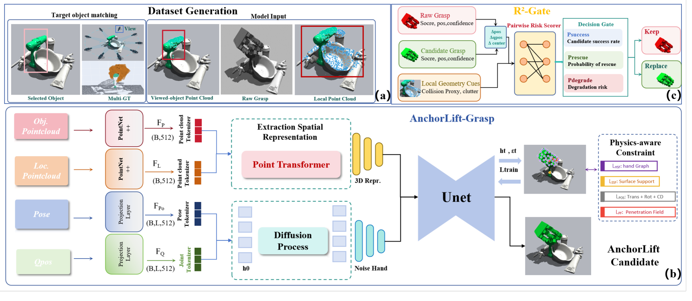
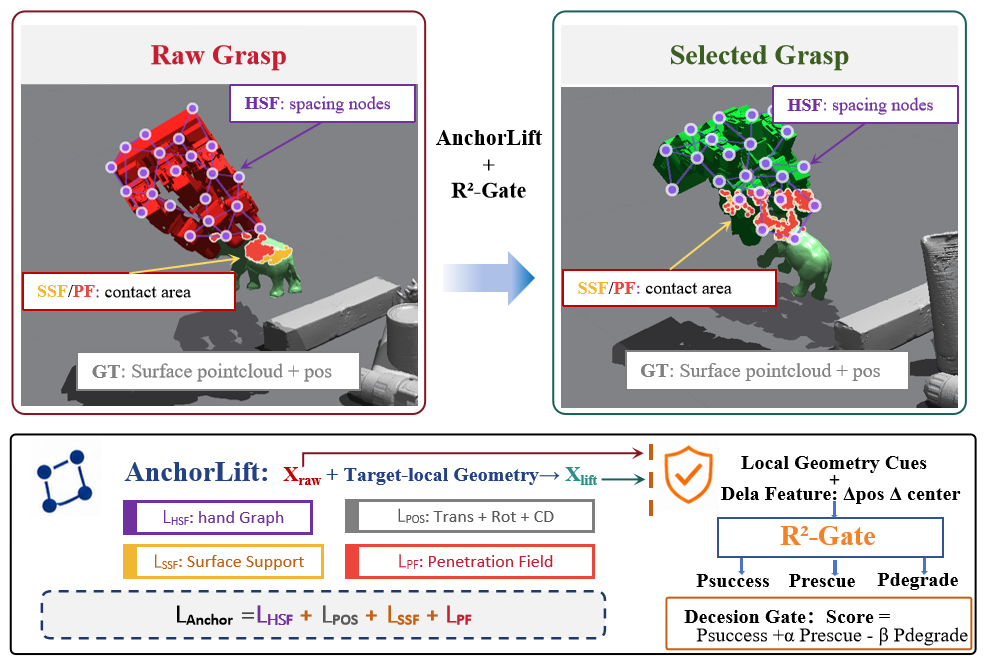
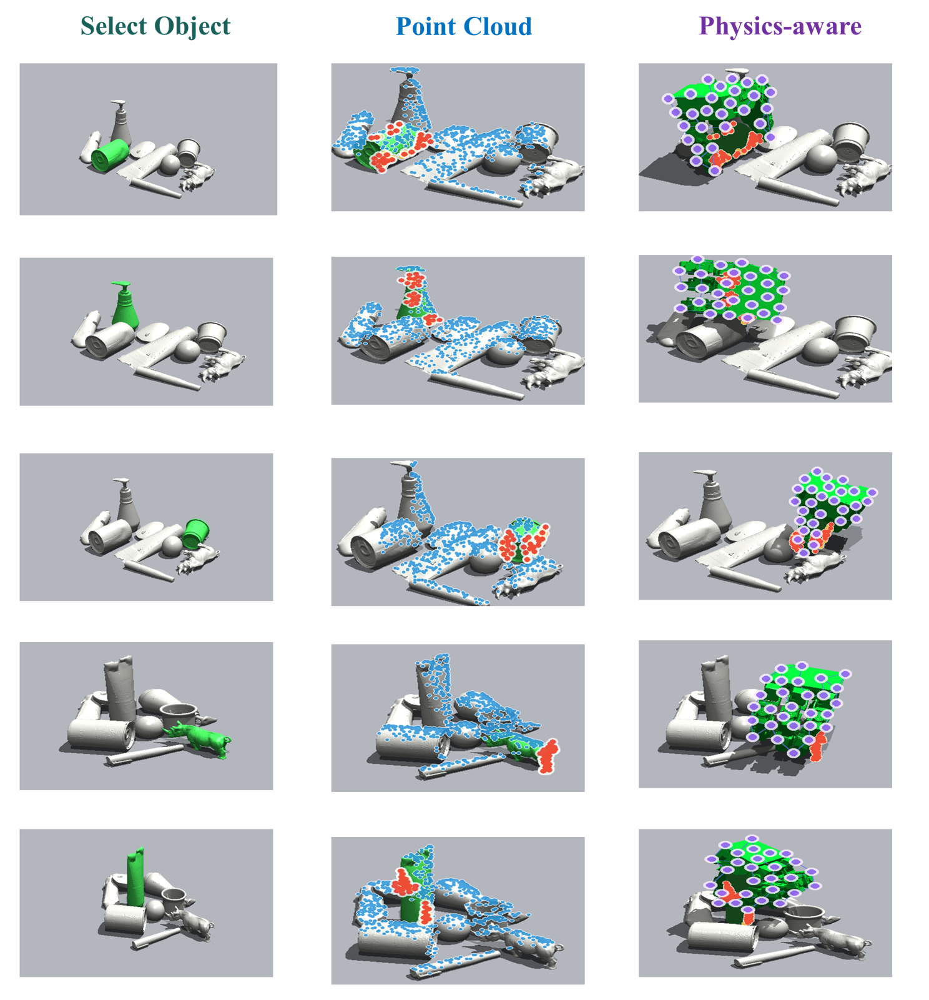
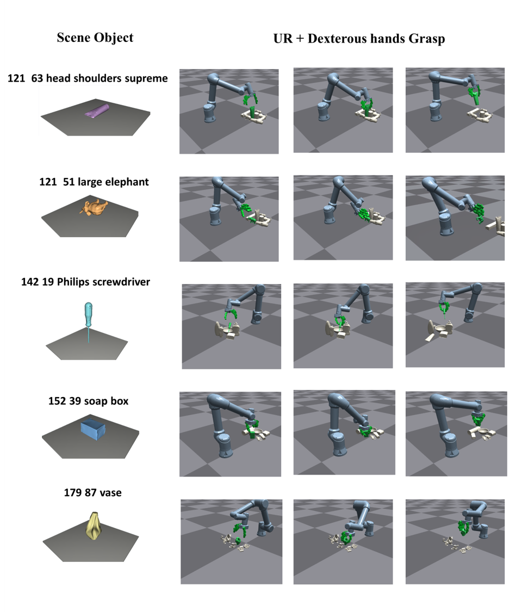
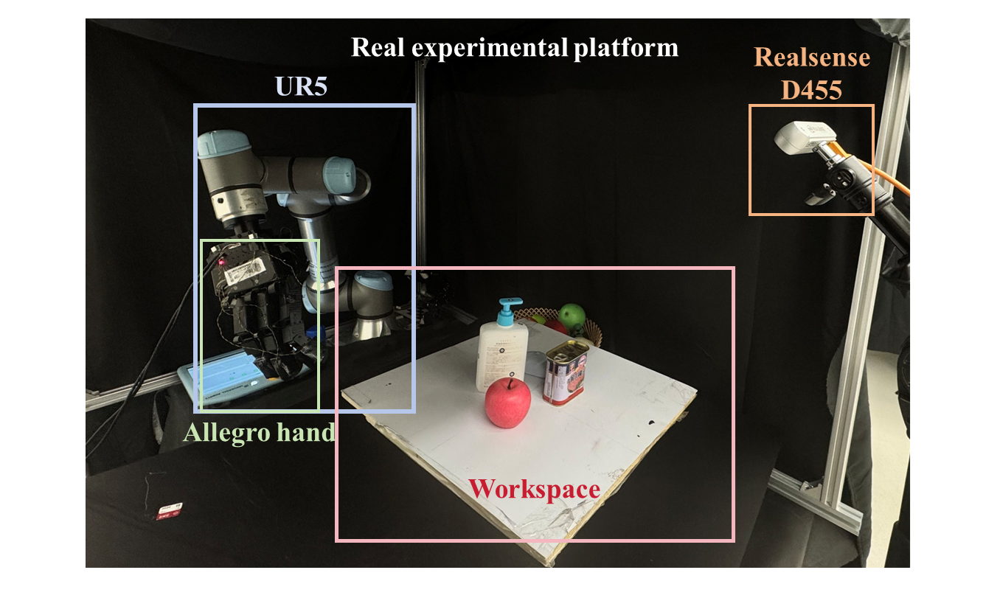
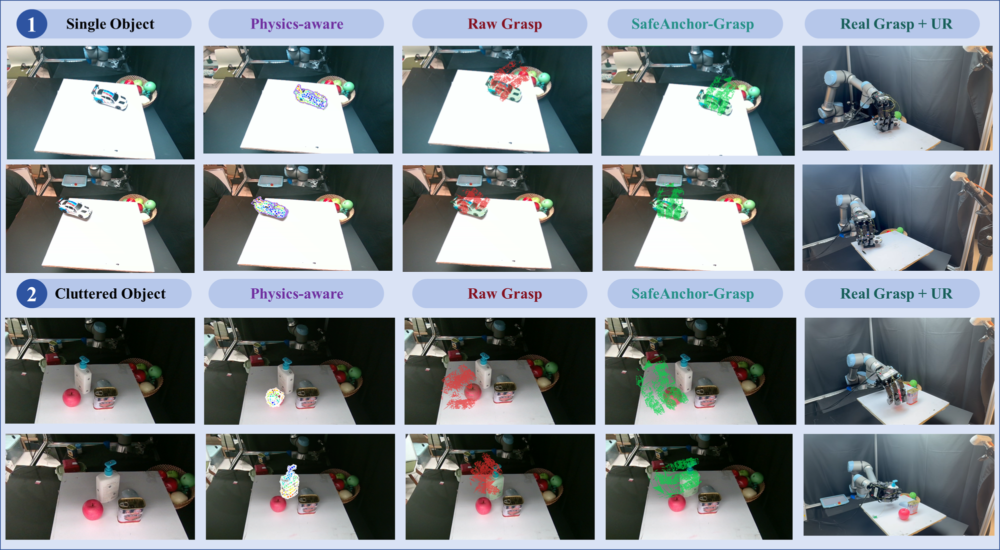

Raw Grasp Anchor
Preserves target-object identity and the useful grasp prior from the original visual grasping system.
Same-object safe enhancement for dexterous grasping
A lightweight second-stage framework that reuses a Raw Grasp prior, expands same-object candidates with AnchorLift, and applies Rescue-Risk Gate for risk-aware replacement in cluttered multi-object scenes.
Abstract
Dexterous grasping in cluttered multi-object scenes requires more than a geometrically plausible hand pose. The grasp must remain stable during lifting and holding. SafeAnchor-Grasp reuses existing visual grasping priors and performs low-cost same-object second-stage enhancement. AnchorLift binds Raw Grasp to the target object as an anchor seed and generates an AnchorLift candidate from target-local geometry. Rescue-Risk Gate then models Raw Grasp and the AnchorLift candidate as a pair and estimates candidate success, rescue potential, and degradation risk. On GraspNet-1Billion, SafeAnchor-Grasp reaches a final mean success of 0.9322, improving over Raw Grasp by 0.0451 while replacing only about 12 percent of original predictions.
Core Message
Preserves target-object identity and the useful grasp prior from the original visual grasping system.
Expands the same-object candidate space under anchor constraints instead of acting as a simple local refinement.
Provides proxy diagnostic fields for hand structure, surface support, and execution-risk analysis.
Uses a learned intervention policy to select replacements under same-object, low-risk, and budget constraints.
Method

AnchorLift takes target-object point clouds, target-local point clouds, Raw Grasp pose, and hand qpos as inputs. The point cloud feature Fp, local geometry feature FL, pose-anchor feature Fpo, and joint-configuration feature FQ are fused and decoded into an AnchorLift candidate bound to the same target object.


R2-Gate evaluates replacement rather than candidate quality in isolation. It predicts candidate success, rescue potential, and degradation risk from Raw Grasp, AnchorLift candidate, delta features, and object-local cues. The capped rule keeps Raw Grasp by default and allows replacement only for same-object, low-risk, in-budget candidates.
Results
Final mean success on the 90-scene GraspNet-1Billion test.
Mean improvement on 26 hard scenes where Raw Grasp is below 0.85.
Selected replacement rate while preserving the same target object.

| Set | Scenes | Raw | Ours | Gain |
|---|---|---|---|---|
| Full benchmark | 90 | 0.8871 | 0.9322 | +0.0451 |
| Hard scenes | 26 | 0.7237 | 0.8274 | +0.1037 |
| Best-10 hard | 10 | 0.6566 | 0.9008 | +0.2441 |
| Best hard cases | 6 | 0.6113 | 0.9277 | +0.3164 |
| Item | Value |
|---|---|
| Selected replacement rate | 0.119965 |
| Same-object rate | 1.0000 |
| Global budget | 0.12 |
| Per-scene budget | 0.15 |
| Validation rescue | 49 |
| Method | Ratio | Dense | Random | Loose |
|---|---|---|---|---|
| DexGraspNet2.0 / Raw Grasp | 1/1000 | 83.3 | 79.5 | 73.9 |
| CADGrasp | 1/1000 | 89.5 | 87.2 | 81.6 |
| SafeAnchor-Grasp | 1/1000 | 93.2 | 91.1 | 85.6 |
| Split | Pairs | Raw | AnchorLift | Ceiling |
|---|---|---|---|---|
| Train | 23028 | 0.8738 | 0.9361 | 0.9819 |
| Val | 2552 | 0.8954 | 0.9259 | 0.9835 |
Robot Experiments



Videos
Paired examples compare the Raw Grasp prediction with the corresponding UR arm and Allegro dexterous-hand execution.
Hardware videos demonstrate SafeAnchor-Grasp outputs being executed by the UR arm and Allegro dexterous hand.
Citation
Update author and venue metadata before public release.
@article{safeanchor_grasp_2026,
title = {SafeAnchor-Grasp: Same-Object Safe Enhancement for Dexterous Grasping in Cluttered Multi-Object Scenes},
author = {Anonymous Authors},
journal = {Manuscript under preparation},
year = {2026}
}